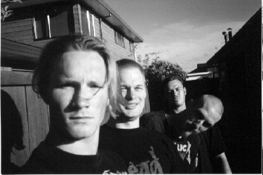

Dave Pete Markham (leaning over) James (background)
Wholesale Drainage are a four piece industrial pop-rock band from Palmerston North, New Zealand. Our music has been described as a "confident set of semi-industrial, angst ridden, originals... their sound is a mesh of drums and synth bass with lots of swirly keyboards and big chunky guitar riffs" (Evening standard.22nd Oct. 1996) and "Dark keyboard and guitar rock"(Evening standard. 19th Feb. 1997). Our line-up consists of:
vocalist , drummer , guitarist , and keyboardist . As we have no bass player we rely on keyboards to provide deep, dark and original bass sounds and melodies. We have been compared to a lot of bands: Nine inch nails, type o negative, Faith no more, and Foetus among other bands; in reality we sound unlike any of these bands and don't find it easy to describe our sound .We have been together (in slightly different line-ups) for around three years. We are all students at our local university and have recently been very active on the local music scene. A few years ago we lost our guitarist and about the same time we started having keyboard problems which almost put an end to us. However, we got the keyboard fixed and we continued with our new guitarist,
Markham . We now have a number of demos recorded at the local 8/16 - track digital studio, some of which have received airplay on our local student radio station . Some of these recordings are available on the "Excommunicated" and "Valve 9", and on the forthcoming 'Intemperance' compilation CD's - see drainage gigs and news ..